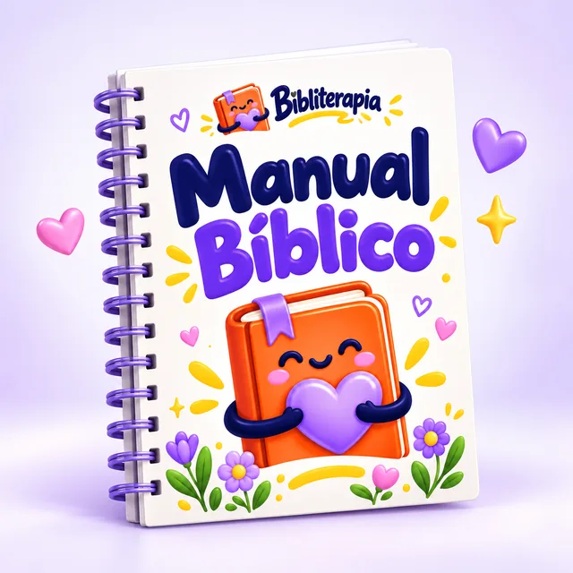

Estudo visual
Organize a leitura e conecte as histórias.
Um kit visual para sair da leitura solta e enxergar as conexões da Palavra. Conheça o Manual Bíblico, o Mapa Bíblico e o Manual dos 4 Evangelhos.
Representação ilustrativa dos materiais digitais.
Compra pela Hotmart · Materiais digitais · Sem envio físico
Organize a leitura e conecte as histórias.
Acesse seus arquivos após a aprovação do pagamento.
Explore os quatro Evangelhos.
Crie momentos de aprendizado com a Palavra.
Os três materiais abaixo estão incluídos no pacote principal. Eles se complementam para deixar o estudo mais claro e envolvente.

Um panorama de Gênesis a Apocalipse para conhecer os livros e aprofundar sua compreensão das Escrituras.
Uma visão visual e organizada para acompanhar os principais temas e perceber as conexões da narrativa bíblica.
Explore Mateus, Marcos, Lucas e João e acompanhe a vida, o ministério e os ensinamentos de Jesus.
3 materiais digitais por R$ 17,90. Complementos opcionais à parte.
Materiais de apoio ao estudo. Use-os junto à leitura da sua Bíblia. A compra é digital; nenhum produto físico será enviado.
Acesse o checkout da Hotmart e confira a oferta. Os complementos são opcionais e cobrados separadamente.
Após a confirmação do pagamento, siga as orientações da Hotmart para acessar os arquivos digitais.
Separe sua Bíblia, escolha uma leitura e explore os materiais no seu ritmo, sozinho ou em família.
Um apoio para quem está começando, para quem deseja organizar os estudos e para famílias que querem compartilhar a Palavra.
Quero começarEncontre uma visão geral que ajude a orientar sua leitura.
Conecte temas e registre as perguntas que surgem no caminho.
Abra espaço para conversar sobre as histórias e seus ensinamentos.
Reúna três materiais complementares para acompanhar seus estudos e descobrir a Bíblia de um jeito visual e criativo.
Kit digital por
R$ 17,90Valor do pacote principal.Quero meu kit por R$ 17,90Confira as condições de pagamento e acesso no checkout.
Os complementos abaixo não estão incluídos neste valor.
Conheça os materiais adicionais que você pode escolher no checkout. Cada complemento tem seu próprio valor.
Histórias e personagens bíblicos para momentos de pintura e conversa.
Opcional no checkoutArtes digitais para acompanhar a leitura e trazer mais cor à sua papelaria.
Opcional no checkoutArquivos de artes cristãs para personalização. A caneca física não está incluída.
Opcional no checkoutUm material visual para explorar e consultar a organização dos livros bíblicos.
Opcional no checkoutUm material adicional com abordagem ilustrada, diferente do manual incluído no kit.
Opcional no checkoutO pacote principal inclui o Manual Bíblico, o Mapa Bíblico e o Manual dos 4 Evangelhos.
Não. Os produtos são digitais. Nenhum livro impresso, caneca, lápis ou outro item físico será enviado.
Após a confirmação do pagamento, siga as orientações fornecidas pela Hotmart para acessar sua compra.
Não. Desenhos para colorir, marca-textos, artes para canecas, Tabela Periódica da Bíblia e 4 Evangelhos Ilustrados são complementos opcionais, cobrados separadamente no checkout.
São materiais diferentes nesta oferta. O Manual dos 4 Evangelhos faz parte do pacote principal. Os 4 Evangelhos Ilustrados são um complemento opcional.
Os materiais podem acompanhar diferentes momentos de estudo. Leia sua Bíblia junto com eles e avance no seu ritmo. Crianças podem precisar do acompanhamento de um adulto.
Consulte as condições exibidas no checkout da Hotmart antes de concluir a compra. Para questões sobre uma compra já realizada, utilize os canais disponíveis nos detalhes do pedido na Hotmart.
Conheça o kit, encontre seu próximo tema e reserve um momento para aprender com a Palavra.
Quero começar meu estudoManual Bíblico + Mapa Bíblico + Manual dos 4 Evangelhos.